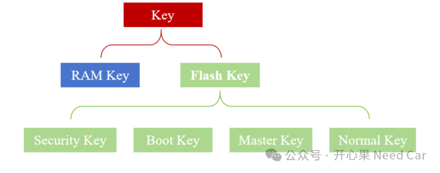
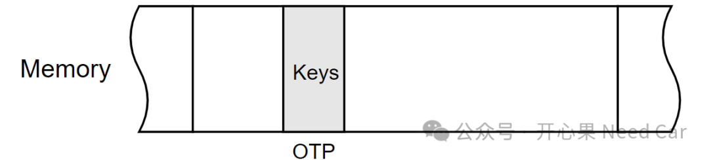
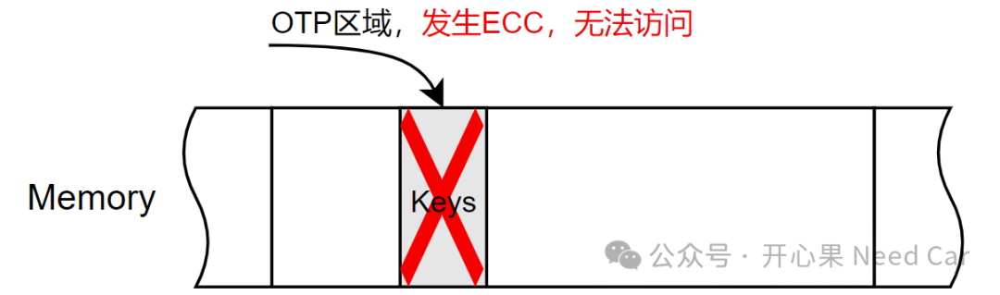
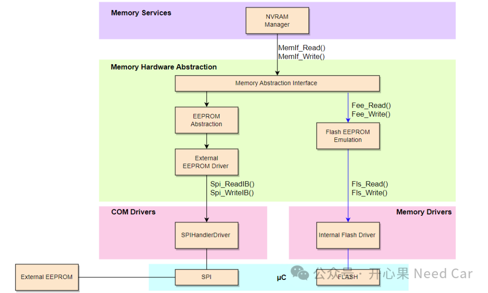

在信息安全的话题里，永远绕不开"密钥"这个自带光环的主角。不管是对称算法还是非对称算法，只有搭配上合适的密钥，才能发挥出加密/解密、签名/验签的功能。既然密钥如此重要，那么，密钥的管理就不能怠慢，本文，聚焦密钥管理，详细讨论密钥管理中的一些细节。从存储的角度区分，密钥可分为易失性密钥和非易失性密钥。对于易失性密钥，主要存储在RAM区，具有可暴露，临时使用特点；对于非易性密钥，主要存储在Flash中，具有不可泄露特点。
其中，针对非易失性密钥，在一些产品（eg：RH850 C1MA2）中还会进一步细分：Master Key、Security Key、Boot Key、Normal Key等。Master Key：主要用于其他密钥的注册、更新、擦除等。注意：该密钥不能对Security Key操作。Security Key：一般来说，该种类型的Key是芯片出厂自带的密钥，而且具有唯一性，任何人都不知道密钥内容。Boot Key：该类密钥主要用于安全启动，由用户注入。Normal Key：该密钥可用于加密（encrypt）/解密（decrypt）数据、生成（generate）/验证（verify）信息等。
当然，不同的芯片类型，不同的芯片型号，对于密钥分类、管理、存储存在一定区别。
确保信息安全的前提是确保密钥的安全和可靠。所以，基于这一点，衍生出了密钥管理的话题。密钥管理主要讨论：密钥生成、密钥存储、密钥使用和密钥销毁。
对于MCU级的控制器，软件开发过程中，密钥生成涉及的内容相对较少。密钥生成主要在产线端由上位机生成或者OTA时，云端下发。所以，对于MCU级芯片的软件开发来说，更多的侧重密钥的安全存储和使用。
本文主要聚焦：密钥存储、密钥使用和密钥销毁。
（一）密钥存储
为了确保密钥安全，可以将明文的密钥进行加密存储，或者存储在ECU的安全区域，eg：OTP（One Time Programmable）区域，以防密钥被非法篡改、窃取。
密钥存储到OTP区域，示意如下：

我们知道，OTP区域属于一次性编程区域，密钥存储到该区域，意味着密钥不可修改。什么样的数据可以存储到这样的内存区呢？比如：安全常量、“一机一密”中的唯一密钥...粗暴的理解：芯片整个生命周期内，不需要修改的信息即可存入OTP区域。但是，存入OTP区域的信息就万事大吉吗？这里举一个场景：如果该OTP区域发生了ECC（Error Correction Code）问题，OTP数据将无法获取，怎么办呢？示意如下：
所以，工程上，是否启用OTP，需要斟酌。对于多数芯片，需要用户维护密钥存储，也就是说：需要用户通过存储栈（NVM->FEE->Flash Driver->Flash）将数据存储到指定内存区。数据的存储还需要考虑内存均匀磨损的问题，也就是存储密钥内存的使用寿命问题。CP Autosar软件架构中，存储栈分层示意如下：
当然，有些芯片（eg：RH850 C1MA2）本身就支持密钥存储管理，即：用户不需要考虑密钥存储位置，以及怎么存储的问题。也就是说，芯片对应的密钥管理模块自身会去调用Flash Sequence指令，实现密钥的存储和擦除管理。所以，遇到此类型芯片时，多数会要求Flash必须优先完成初始化。
密钥使用，主要是指加密/解密、签名/验签时的密钥使用。使用完密钥以后，尤其临时存储RAM区域的密钥，要及时删除，避免密钥长时间暴露。点击下方关注，一起聊聊Autosar/嵌入式，如果需要，联系作者进群，给你更专业的解答